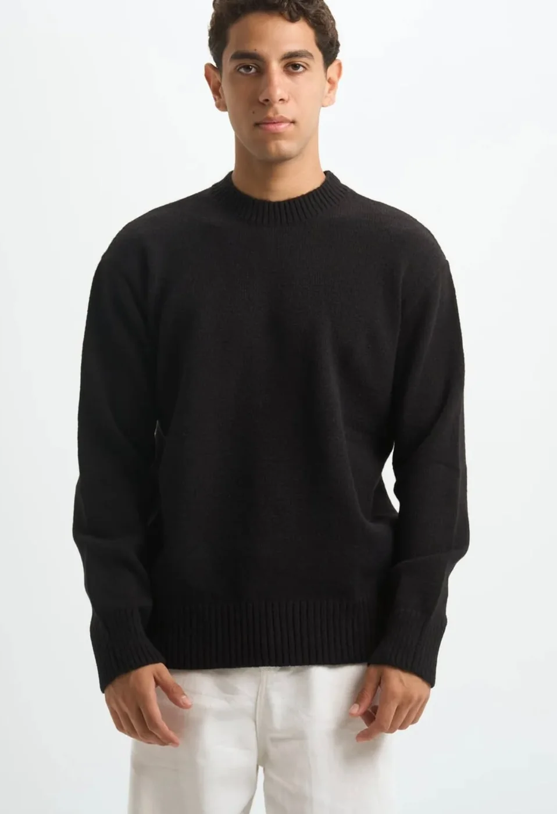

New collectionArchive 01
01 / 12
RUINS.
Archive 01
Archive 01
Made
in Cairo
01
in Cairo

Basics // 2026 archive
Slogan
Basics built to last.
Knit Crewneck in black. A heavy knit with a ribbed neck and a clean, boxy line. Made in Cairo.
View piece
Archive 01
01 / 04
Fall / Winter
Collection
R—02
Knit Zip Jacket
Everyday essentials
with a modern edge.
Charcoal
Grey
Premium
Knit
FW
’26
RUINS®
Clothing
collection
Shop all
About Ruins
Basics you reach for every day, made to outlast the season.
Ruins makes everyday clothing in Cairo: heavy knits, brushed fleece and clean lines in black, brown, grey and cream. Nothing loud, nothing wasted. Archive 01 is where it starts.